Ashley Louie
Ashley Louie
Data Through Design 2019
event identity graphics, artist display tags, and promotion material
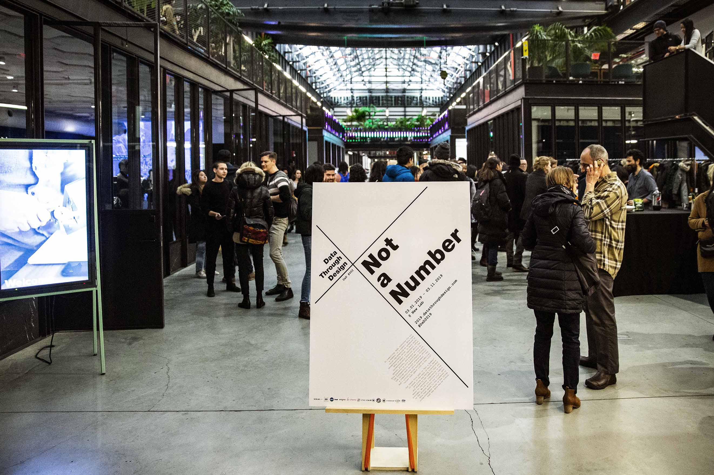 New Lab, Brooklyn, NY
Media [above] 36”x48” event poster at the lobby entrance
Photography [above] Junyu Cao
Media [left] A6 artist tag, featuring title, name, data sources, and description
Media [center] donation jar signage
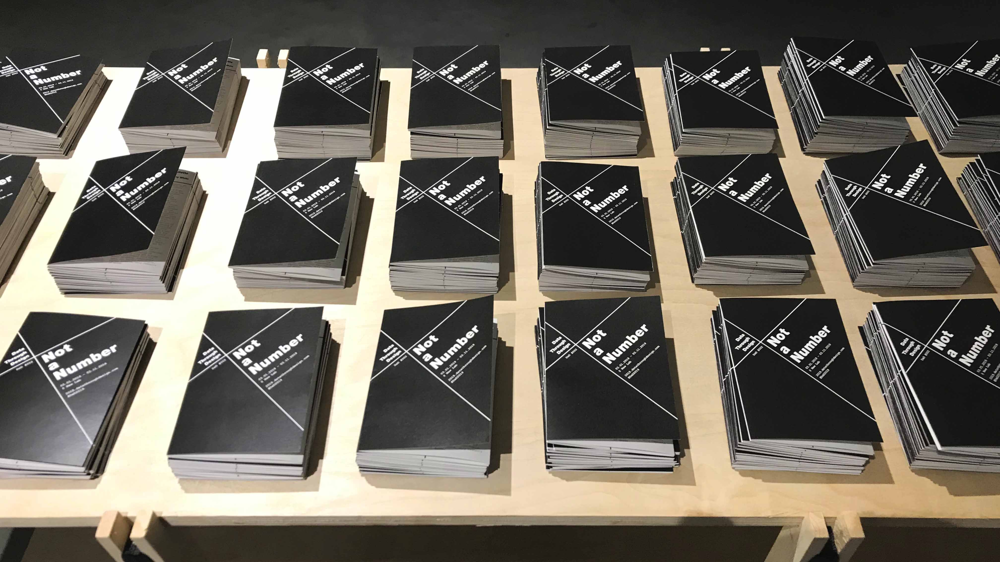
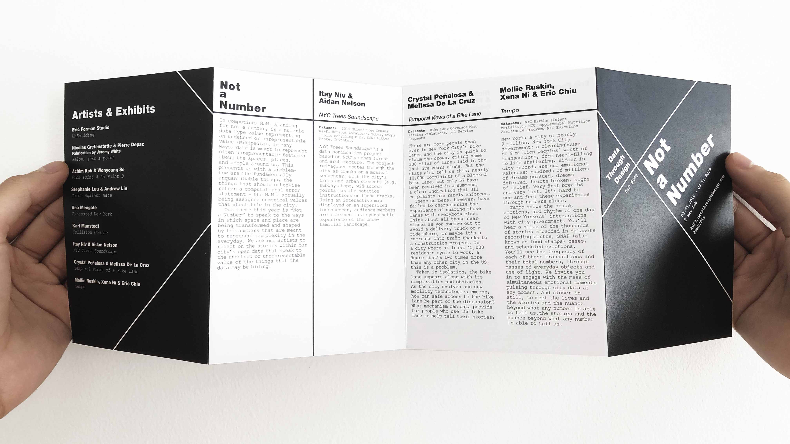
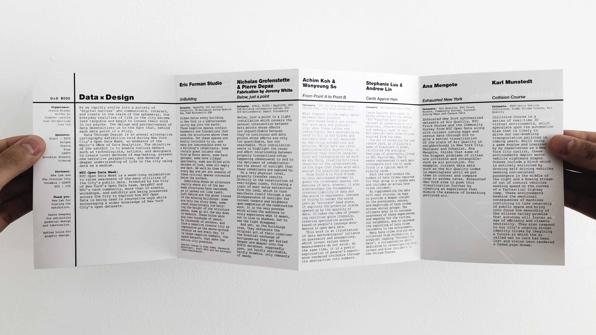
event identity graphics, artist display tags, and promotion material
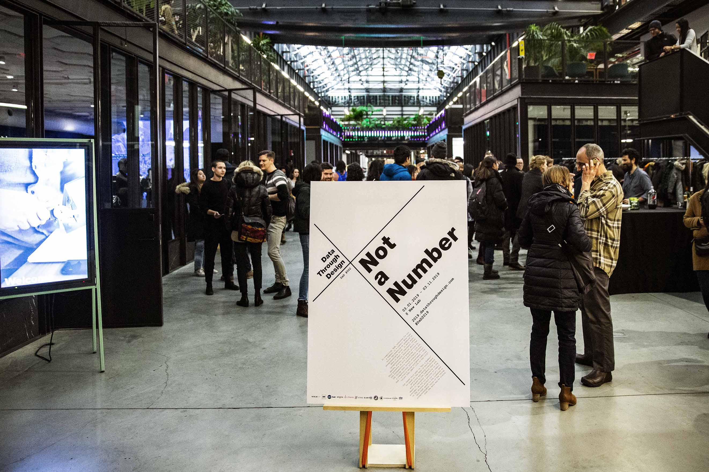 New Lab, Brooklyn, NY
Media [above] 36”x48” event poster at the lobby entrance
Photography [above] Junyu Cao
Data Through Design is an annual exhibition celebrating tangible and multimedia expressions of New York City's Open Data. For further information, refer to the Data Through Design 2019 event page.
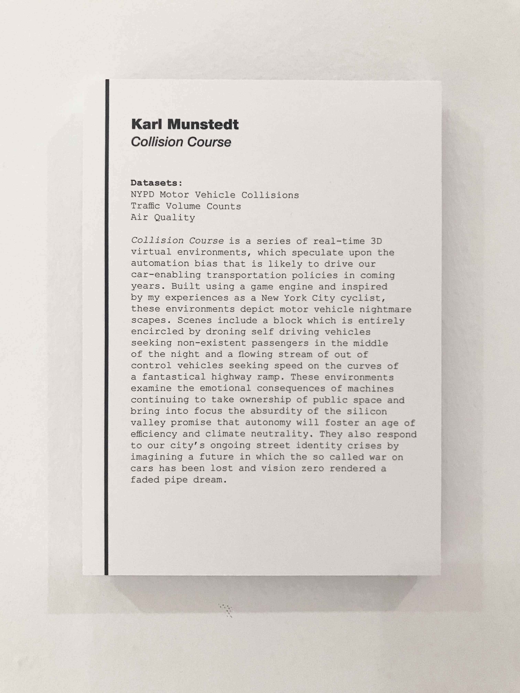
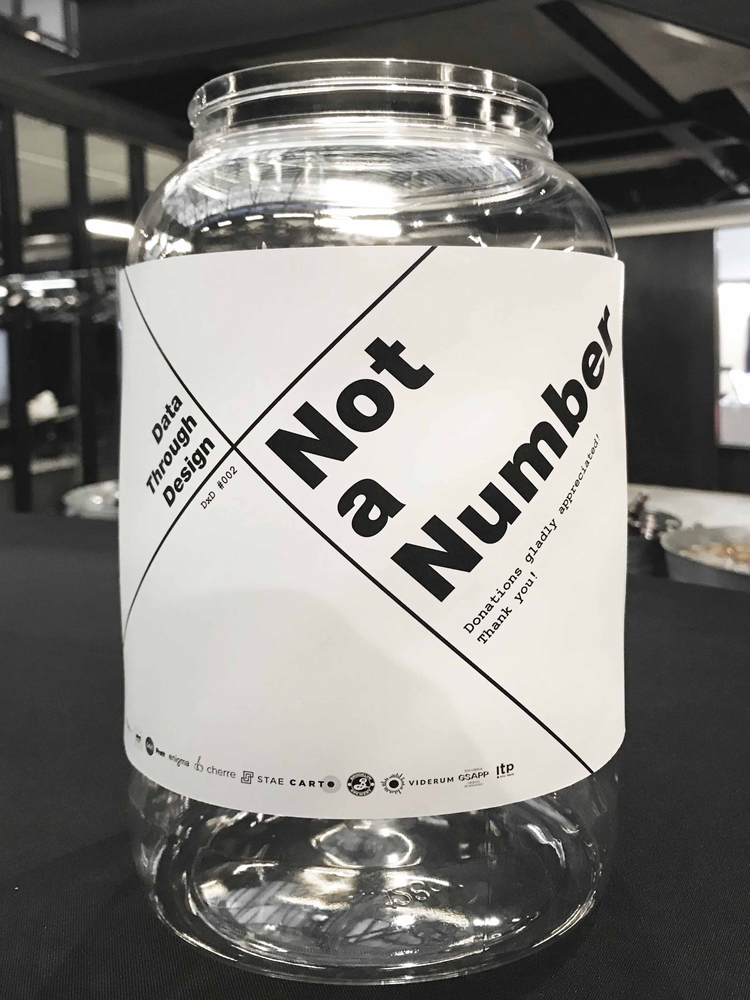
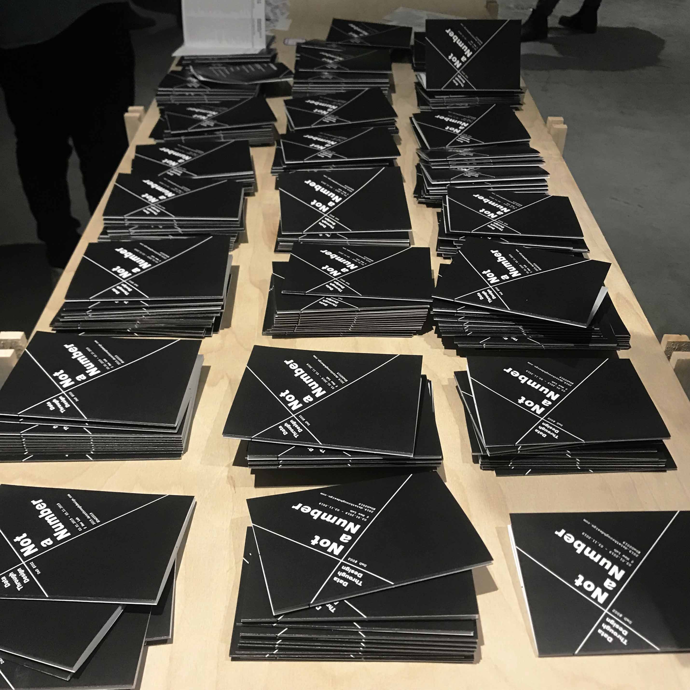
Media [center] donation jar signage
Event identity graphics and design system for print materials, including take-away booklets, posters, flyers, and artist description tags.
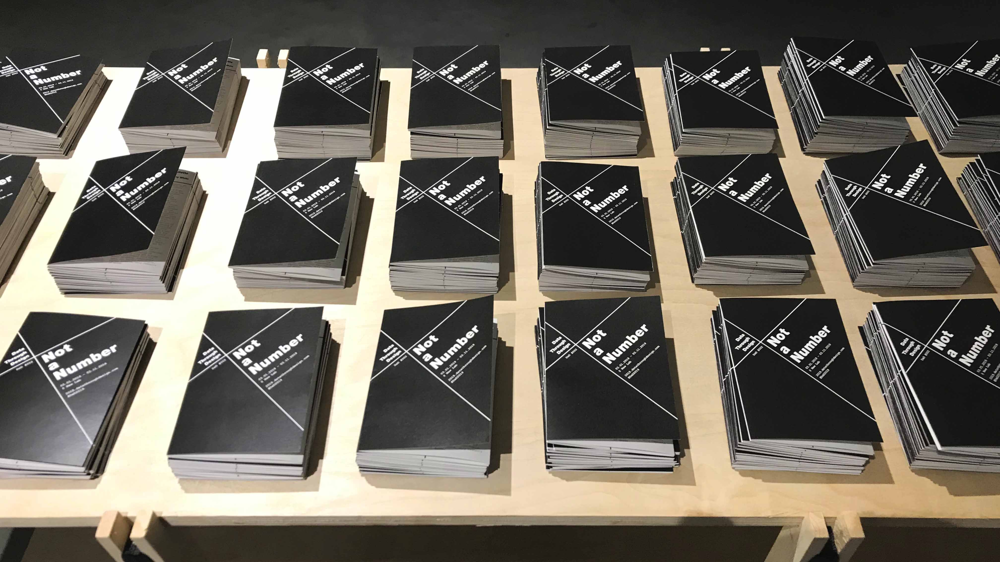
Photography [above] Junyu Cao
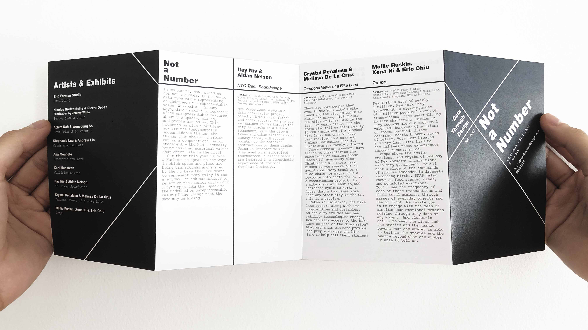
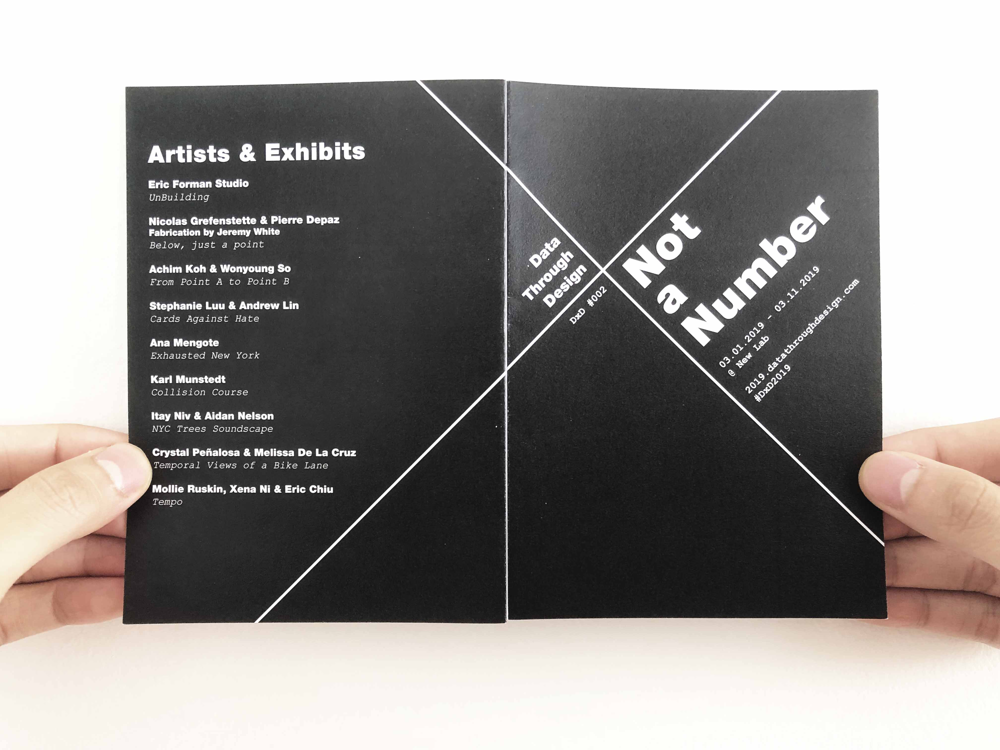
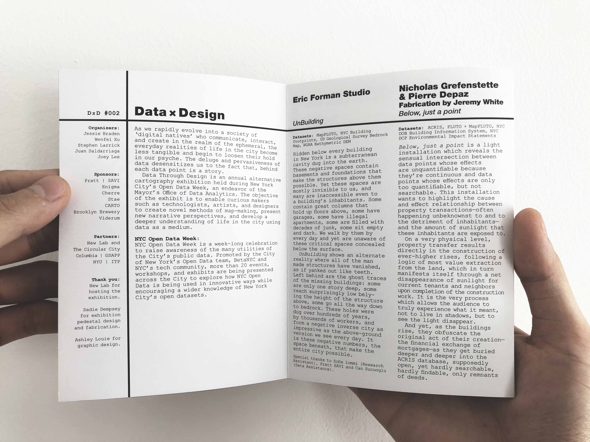
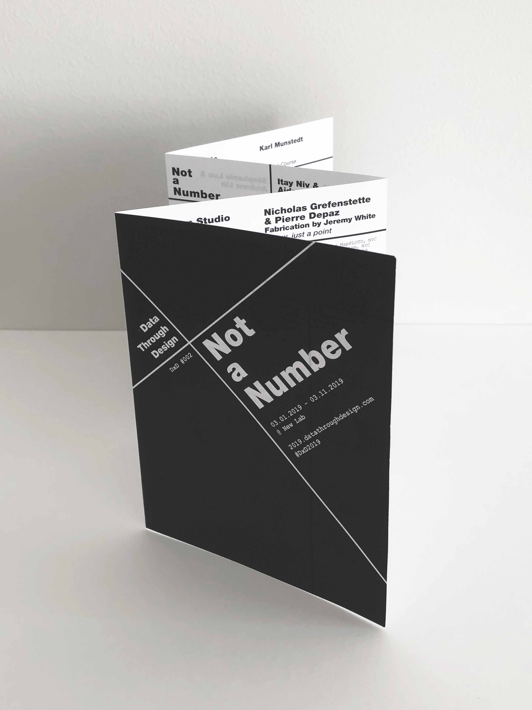
Media A6 accordion-fold booklet with black on front and back cover; interior fold out text with event info and artist bios